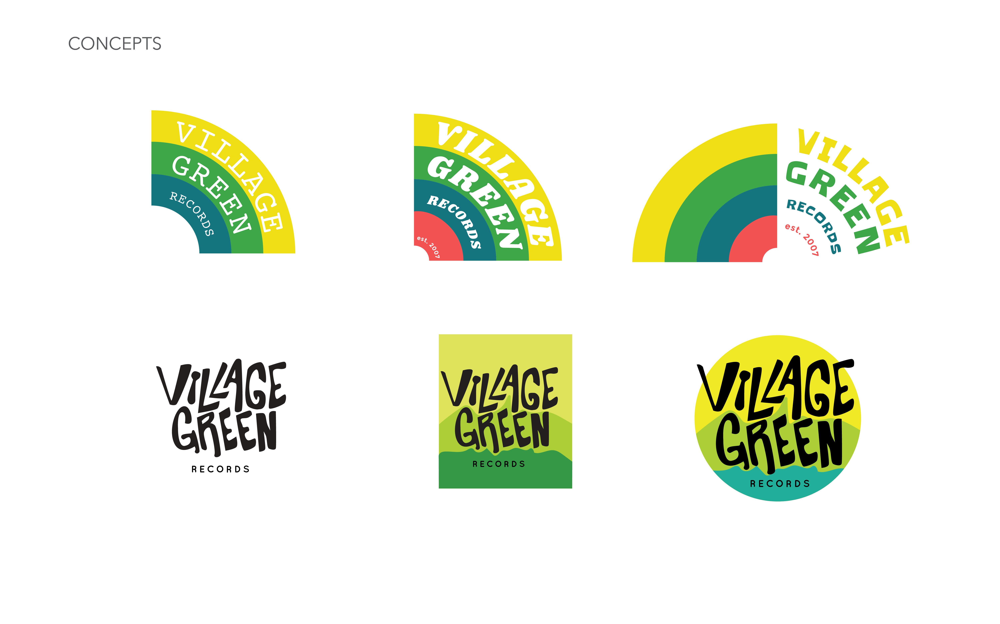
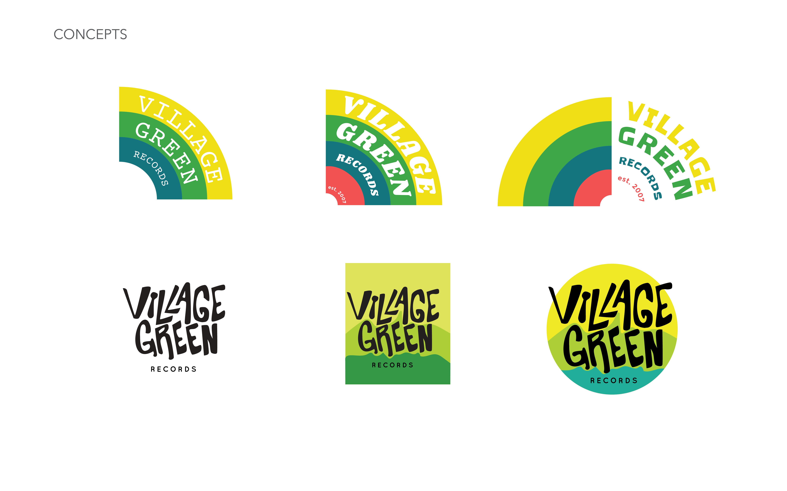

Village Green Records
Village Green Records (VGR) is a colorful, eclectic record store in Muncie, Indiana. I drew inspiration from the clouds and blue sky painted onto the floor of the store and the motion and shape of a record for my design. I made an interactive, playful logo. It is colorful to incorporate the feeling of the store, with bands that recall the image of a rainbow. Read more about my project on my blog.
Primary Logo

Development
 

Merchandise

Secondary Logo

Tertiary Logo